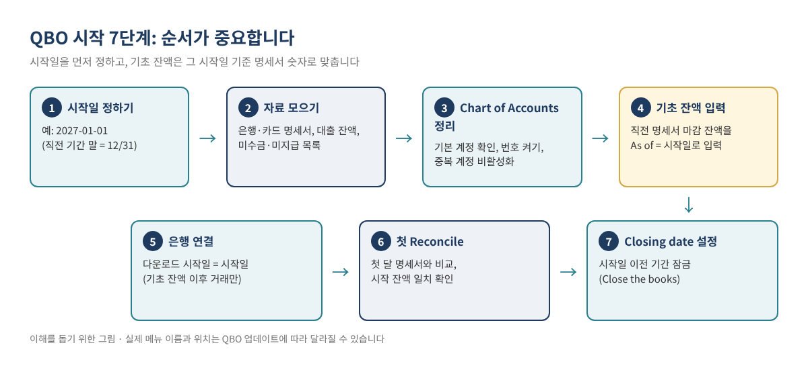
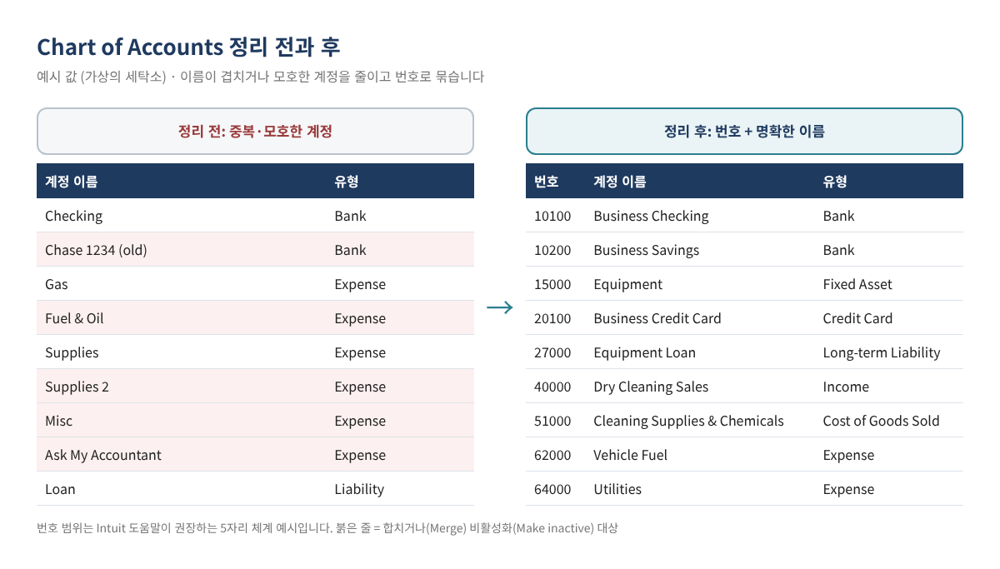
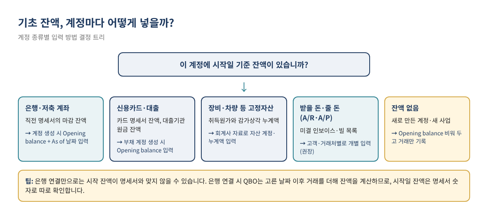
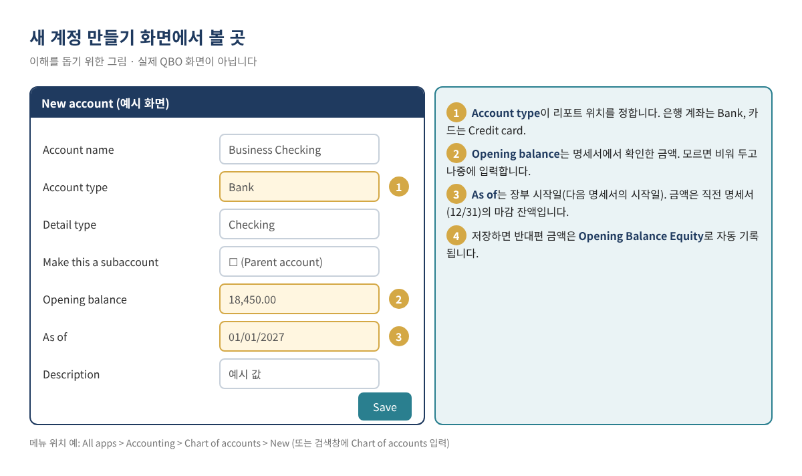

QBO 처음 시작하기: 기초 잔액과 Chart of Accounts 제대로 세팅하는 법
QuickBooks Online(이하 QBO)을 새로 시작하면 대부분 은행부터 연결하고 거래 분류를 시작합니다. 그런데 몇 달 뒤 대차대조표를 열어 보면 은행 잔액이 명세서와 맞지 않거나, Opening Balance Equity라는 낯선 계정에 큰 금액이 남아 있거나, 같은 성격의 비용이 "Supplies", "Supplies 2", "Misc"에 흩어져 있는 경우가 많습니다. 원인은 거의 항상 같습니다. 시작일과 기초 잔액을 정하지 않은 채, 그리고 계정과목(Chart of Accounts)을 정리하지 않은 채 거래부터 넣었기 때문입니다.
이 글은 QBO 기초 시리즈의 첫 번째 심화편입니다. QuickBooks Online 기초 가이드에서 간단히 소개한 내용 중, 장부의 출발점이 되는 두 가지, 즉 기초 잔액과 Chart of Accounts를 단계별로 자세히 다룹니다. 가상의 세탁소를 예로 들어 실제 숫자로 따라 할 수 있게 정리했습니다.
이런 분께 필요합니다: QBO 회사 파일을 막 만들었거나 만들 예정인 분, 연도 중간에 QBO로 옮기는 분, 은행 잔액이 명세서와 맞지 않아 처음부터 다시 맞추고 싶은 분, 계정과목이 너무 많거나 지저분해서 정리하고 싶은 분.
1. 먼저 알아 둘 개념 세 가지
시작일(장부 시작일)
QBO에 거래를 기록하기 시작하는 첫날입니다. 보통 회계연도 첫날(예: 2027년 1월 1일)이나 분기·월의 첫날로 잡습니다. 시작일 이전의 모든 거래는 QBO에 하나하나 넣지 않고, 그 결과인 잔액 하나로 요약합니다. 이것이 기초 잔액입니다.
기초 잔액(Opening balance)
시작일 시점에 각 계정에 이미 있는 금액입니다. 은행 잔고, 카드 미결제 잔액, 대출 원금 잔액, 장비 취득원가처럼 대차대조표 계정에만 있습니다. 매출이나 비용 같은 손익 계정에는 원칙적으로 기초 잔액을 넣지 않습니다.
Opening Balance Equity(OBE)
계정을 만들 때 기초 잔액을 입력하면 QBO는 그 반대편 금액을 Opening Balance Equity 계정에 자동으로 기록합니다(Intuit 도움말 기준). 모든 기초 잔액을 다 넣고 나면 OBE에는 "자산 − 부채", 즉 시작일 기준 순자산이 남습니다. 이 금액은 나중에 회계사와 함께 자본 계정(Owner's equity, Retained earnings 등)으로 옮깁니다. 정리 방법은 OBE 잔액 정리법에서 따로 다룹니다.

2. 시작일 정하기
시작일은 "어디까지를 과거로 요약하고, 어디부터를 거래로 기록할지"를 나누는 선입니다. 아래 표를 참고해 정합니다.
| 상황 | 권장 시작일 | 이유 |
|---|---|---|
| 새 사업, 아직 거래 거의 없음 | 사업 개시일 또는 첫 계좌 개설일 | 기초 잔액이 거의 없어 가장 간단합니다 |
| 기존 사업, 연초에 QBO 도입 | 회계연도 첫날 (예: 1/1) | 연간 손익을 QBO 한 곳에서 볼 수 있습니다 |
| 기존 사업, 연도 중간에 도입 | 분기 또는 월의 첫날 | 연초 이후 거래는 따로 넣거나 회계사와 방법을 정해야 합니다 |
| Desktop에서 이전 | 변환 방식에 따라 다름 | Desktop → Online 이전 가이드 참고 |
Intuit 도움말은 기존 계좌의 기초 잔액 날짜로 다음 명세서의 시작일을 쓰라고 안내합니다. 즉 시작일을 1월 1일로 정했다면 12월 31일에 끝나는 명세서의 마감 잔액을 기초 잔액으로, 날짜(As of)는 1월 1일로 넣습니다. 새로 연 계좌는 은행에서 계좌를 연 날을 씁니다.
팁: 연도 중간에 시작하면 그해 세금 신고 때 "QBO 이전 기간"의 손익을 따로 합쳐야 합니다. 가능하면 연초 시작이 가장 깔끔하고, 연도 중간이라면 연초까지 거슬러 올라가 거래를 넣을지 회계사와 먼저 정하는 것이 좋습니다.
3. 자료 모으기: 시작일 기준 잔액 목록
기초 잔액은 기억이나 온라인 뱅킹 화면의 "현재 잔액"이 아니라 명세서와 서류에서 가져옵니다. 시작일 전에 아래 자료를 한곳에 모아 둡니다.
| 계정 종류 | 필요한 자료 | 어떤 숫자를 쓰나 |
|---|---|---|
| 사업용 체킹·세이빙 | 시작일 직전에 끝나는 은행 명세서 | 명세서 마감 잔액(Ending balance) |
| 사업용 신용카드 | 시작일 직전에 끝나는 카드 명세서 | 명세서상 갚아야 할 잔액 |
| 대출(장비·SBA·차량 등) | 대출기관의 잔액 확인서 또는 상환 스케줄 | 시작일 기준 원금 잔액 (이자 제외) |
| 장비·차량·인테리어 등 고정자산 | 직전 연도 세금 신고서의 감가상각 명세, 회계사 자료 | 취득원가와 감가상각 누계액 |
| 받을 돈 (A/R) | 시작일 기준 미수금 인보이스 목록 | 고객별, 인보이스별 미수 금액 |
| 줄 돈 (A/P) | 시작일 기준 미지급 청구서 목록 | 거래처별, 청구서별 미지급 금액 |
| 판매세·급여세 미납분 | 신고서, 급여 서비스 리포트 | 시작일 기준 미납 금액 (해당 시리즈 편에서 따로 다룸) |
4. Chart of Accounts 정리하기
기초 잔액을 넣기 전에 계정과목부터 정리합니다. 잔액을 넣은 계정을 나중에 합치거나 비활성화하면 그 영향이 OBE에 섞여 정리하기 어려워지기 때문입니다.
4-1. 계정과목 화면 열기
Intuit 도움말 기준 경로는 All apps → Accounting → Chart of accounts입니다. 왼쪽 메뉴 구성은 자주 바뀌므로, 메뉴가 보이지 않으면 상단 검색창에 "Chart of accounts"를 입력해 찾습니다.
4-2. QBO가 쓰는 기본 계정 확인
QBO는 몇 가지 기본 계정을 직접 사용합니다. Intuit 도움말에 나오는 예는 Accounts Receivable(A/R), Accounts Payable(A/P), Opening Balance Equity, Retained Earnings, Undeposited Funds, Uncategorized Income·Expense, Reconciliation Discrepancies 등이며, 판매세나 재고 기능을 켜면 관련 계정이 추가됩니다. 이 기본 계정들은 지우거나 비활성화하지 않습니다.
4-3. 계정 번호 켜기 (선택이지만 권장)
계정 번호는 기본적으로 꺼져 있습니다. 켜면 리포트에서 계정이 번호 순으로 정렬되어 찾기 쉬워집니다.
- Settings(⚙) → Account and settings → Advanced 탭으로 이동합니다.
- Chart of accounts 항목의 연필(Edit) 아이콘을 누릅니다.
- Enable account numbers를 켭니다. 리포트와 거래 화면에서 번호를 보려면 Show account numbers도 선택합니다.
- Save, 이어서 Done을 누릅니다.
- Chart of accounts 화면에서 Batch edit(연필 아이콘)를 눌러 Number 칸에 번호를 한꺼번에 입력하고 저장합니다.
Intuit 도움말은 어떤 번호 체계든 쓸 수 있다고 하면서, 아래와 같은 5자리 체계를 예로 듭니다.
| 번호 범위 | 계정 분류 | 예 (예시 값 / Sample values) |
|---|---|---|
| 10000–19999 | 자산 (Assets) | 10100 Business Checking, 15000 Equipment |
| 20000–29999 | 부채 (Liabilities) | 20100 Business Credit Card, 27000 Equipment Loan |
| 30000–39999 | 자본 (Equity) | 30000 Owner's Equity |
| 40000–49999 | 수입 (Income) | 40000 Dry Cleaning Sales |
| 50000–59999 | 매출원가 (Cost of Goods Sold) | 51000 Cleaning Supplies & Chemicals |
| 60000–69999 | 비용 (Expenses) | 62000 Vehicle Fuel, 64000 Utilities |
| 70000–79999 | 기타 수입 (Other Income) | 70000 Interest Income |
| 80000–89999 | 기타 비용 (Other Expenses) | 80000 Penalties (비공제 항목 구분용) |
4-4. 계정 추가하기
Chart of accounts 화면에서 New를 누르고, 계정 이름, Account type, Detail type을 고릅니다. 필요하면 Make this a subaccount를 체크해 상위 계정(Parent account) 아래에 둡니다. Account type이 그 계정이 손익계산서와 대차대조표의 어디에 나타날지를 정하므로 이름보다 중요합니다. 예를 들어 장비 대출을 Expense로 만들면 원금 상환이 비용으로 잡혀 이익이 줄어 보입니다.
4-5. 필요 없는 계정 정리: 삭제가 아니라 비활성화
QBO에서는 계정을 삭제할 수 없고, 비활성화(Make inactive)하거나 다른 계정과 합칠 수 있습니다. 계정 목록의 Action 열 드롭다운에서 Make inactive를 고르면 되고, 과거 거래는 그대로 남습니다. 주의할 점은 다음과 같습니다.
- 잔액이 있는 계정을 비활성화하면 QBO가 그 잔액을 OBE로 옮기는 분개를 자동으로 만듭니다. 대차대조표 계정은 먼저 잔액을 0으로 만든 뒤 비활성화합니다.
- 기본 계정, 상품·서비스에 연결된 계정, 반복 거래(Recurring)에 연결된 계정, 하위 계정이 있는 계정은 바로 비활성화되지 않습니다. 연결을 먼저 풀거나 하위 계정을 옮깁니다.
- 은행 연결이 된 계좌는 비활성화 대신 연결 해제(Disconnect)부터 합니다.
- 계정이 많다면 Chart of accounts 화면의 Clean up 도구(중복 합치기, 이름 바꾸기, 유형 변경 등)를 쓸 수 있습니다. Intuit 도움말은 승인한 변경은 되돌릴 수 없다고 안내하므로, 실행 전 Account List 리포트를 엑셀로 내보내 보관합니다.
계정 수에는 한도가 있습니다. Intuit의 사용 한도 안내에 따르면 활성 계정 기준으로 다음과 같습니다(비활성 계정은 한도에 포함되지 않음).
| 요금제 | Chart of Accounts 한도 | 비고 |
|---|---|---|
| Simple Start | 250개 | 활성 계정 기준 |
| Essentials | 250개 | 활성 계정 기준 |
| Plus | 250개 | 활성 계정 기준 |
| Advanced | 제한 없음 | — |

5. 기초 잔액 입력하기

5-1. 은행·신용카드·대출 계정: 계정을 만들 때 입력
- All apps → Accounting → Chart of accounts에서 New를 누릅니다.
- 계정 이름을 입력하고 Account type(Bank, Credit card, 부채 등)과 Detail type을 고릅니다.
- Opening balance 칸에 명세서의 마감 잔액을 입력합니다. 카드와 대출은 갚아야 할 금액을 양수로 넣습니다.
- As of 칸에 시작일(다음 명세서의 시작일)을 넣습니다.
- 필요하면 Description을 쓰고 Save를 누릅니다.

5-2. 이미 계정을 만들었는데 잔액을 고쳐야 할 때
Chart of accounts에서 해당 계정의 View register를 열고, Payee가 Opening Balance Equity로 표시된 기초 잔액 줄을 찾아 날짜와 금액을 고친 뒤 저장합니다. 기초 잔액 줄이 아예 없다면, Intuit 도움말은 아직 Reconcile하지 않은 계정에 한해 가장 오래된 거래보다 앞선 날짜로 분개(Journal entry)를 만들고, 상대 계정을 Opening Balance Equity로 하라고 안내합니다. 자산 계정은 차변, 부채 계정은 대변에 넣습니다. 이 분개는 계정 register에서 "R"(Reconciled) 표시를 해 두면 이후 Reconcile 화면에 다시 나타나지 않습니다.
5-3. 장비·차량 같은 고정자산
고정자산은 취득원가와 감가상각 누계액을 나눠서 넣어야 세금 신고서의 감가상각 명세와 맞출 수 있습니다. 회계사에게 시작일 기준 금액을 받아 Fixed Asset 계정(예: Equipment)과 그 하위 계정(예: Accumulated Depreciation)을 만들고, 한 건의 분개로 넣는 방법이 깔끔합니다. 아래 예시를 참고합니다.
5-4. 받을 돈(A/R)과 줄 돈(A/P)
A/R과 A/P 계정에는 계정 화면에서 기초 잔액을 넣지 않습니다. 고객별·거래처별 내역이 있어야 나중에 입금이나 지급을 해당 건에 연결할 수 있기 때문입니다. 방법은 두 가지입니다.
- 미결 인보이스·청구서를 한 건씩 입력: 원래 날짜와 금액으로 입력하면 이후 입금·지급을 그 건에 바로 연결할 수 있어 관리가 편합니다. 다만 그 금액이 어느 기간의 매출·비용으로 잡히는지는 현금주의(Cash)·발생주의(Accrual) 중 어떤 방식으로 신고하는지에 따라 의미가 달라지므로, 사용할 상품·서비스 항목과 계정은 회계사와 정합니다.
- 분개로 한 번에 입력: Intuit 도움말은 A/R·A/P 줄의 Name 칸에 고객이나 거래처를 지정하고 반대편을 Opening Balance Equity로 하는 분개 방법을 안내합니다. 건수가 많을 때 빠르지만, 입금이 들어오면 이 분개와 연결해야 합니다.
주의: 은행을 연결하면 QBO는 고른 날짜 이후의 다운로드 거래를 더해 잔액을 계산합니다(Intuit 도움말). 시작일 이전 거래까지 다운로드해 추가(Add)하면 기초 잔액과 이중으로 잡힙니다. 은행 연결 때 다운로드 시작일은 시작일 당일 이후로 고르고, 다운로드 가능 기간은 은행마다 90일에서 24개월까지 다릅니다.
6. 따라 해 보기: 가상의 세탁소 예시
가상의 사업체 "Maple Dry Cleaning LLC"가 2027년 1월 1일을 시작일로 정했습니다. 12월 31일 기준 자료는 아래와 같습니다. 모든 숫자는 예시 값(Sample values)입니다.
| 계정 (번호) | 유형 | 자료 | 금액 | 입력 방법 |
|---|---|---|---|---|
| 10100 Business Checking | Bank | 12월 은행 명세서 마감 잔액 | $18,450.00 | 계정 생성 시 Opening balance, As of 01/01/2027 |
| 10200 Business Savings | Bank | 12월 명세서 마감 잔액 | $10,000.00 | 동일 |
| 15000 Equipment | Fixed Asset | 프레스·세탁기 취득원가 (회계사 자료) | $42,000.00 | 분개 (차변) |
| 15900 Accumulated Depreciation | Fixed Asset (하위 계정) | 감가상각 누계액 (회계사 자료) | ($16,800.00) | 분개 (대변) |
| 20100 Business Credit Card | Credit Card | 12월 카드 명세서 잔액 | $2,315.40 | 계정 생성 시 Opening balance |
| 27000 Equipment Loan | Long-term Liability | 대출기관 원금 잔액 확인서 | $35,000.00 | 계정 생성 시 Opening balance |
| A/R | — | 미결 인보이스 3건 ($520, $410, $350) | $1,280.00 | 인보이스 개별 입력 |
| A/P | — | 미지급 청구서 2건 ($400, $240) | $640.00 | 청구서(Bill) 개별 입력 |
고정자산 분개(날짜 01/01/2027)는 다음과 같습니다: 차변 Equipment $42,000.00 / 대변 Accumulated Depreciation $16,800.00 / 대변 Opening Balance Equity $25,200.00.
은행·카드·대출·고정자산 입력이 끝나면 OBE 잔액을 계산해 맞는지 확인합니다.
| 구분 | 계산 | 금액 (예시 값) |
|---|---|---|
| 자산 합계 | 18,450.00 + 10,000.00 + 42,000.00 − 16,800.00 | $53,650.00 |
| 부채 합계 | 2,315.40 + 35,000.00 | $37,315.40 |
| 예상 OBE (대변) | 53,650.00 − 37,315.40 | $16,334.60 |
Balance Sheet 리포트를 01/01/2027 기준으로 열어 OBE가 $16,334.60인지 확인합니다. 다르다면 어느 계정의 금액이나 날짜가 틀렸는지 register에서 찾습니다. A/R·A/P를 인보이스와 청구서로 넣은 경우, 그 금액은 사용한 항목의 계정 설정에 따라 OBE가 아닌 다른 계정에 반영될 수 있으므로 위 계산에는 넣지 않았습니다.
7. 은행 연결, 첫 Reconcile, Closing date
- 은행 연결: Intuit 도움말 기준 Bank transactions → Connect account에서 은행을 찾아 로그인하고, 연결할 계좌와 다운로드 시작일(date range)을 고릅니다. 시작일 이전 거래가 내려오면 추가하지 말고 제외(Exclude)합니다. 이 단계는 시리즈 5편에서 자세히 다룹니다.
- 첫 Reconcile: 1월 명세서가 나오면 Reconcile 기능으로 맞춰 봅니다. 시작 잔액(Beginning balance)이 12월 명세서 마감 잔액과 같아야 합니다. 차이가 나면 중복 거래·Reconcile 차이 찾기를 참고합니다.
- Closing date 설정: Settings(⚙) → Account and settings → Advanced → Accounting에서 Close the books를 켜고 Closing date를 시작일 전날(예: 12/31/2026)로 넣습니다. 비밀번호를 요구하는 옵션을 고르면 실수로 기초 잔액이 바뀌는 일을 줄일 수 있습니다.
8. 자주 하는 실수
- 은행부터 연결하고 기초 잔액은 나중에: 다운로드 기간을 길게 잡아 과거 거래를 모두 추가한 뒤 기초 잔액까지 넣으면 잔액이 이중으로 잡힙니다.
- 온라인 뱅킹의 "현재 잔액"을 기초 잔액으로 사용: 아직 처리되지 않은 수표나 카드 결제가 섞여 있어 명세서와 다릅니다. 반드시 명세서 마감 잔액을 씁니다.
- 대출 잔액에 이자까지 포함: 기초 잔액은 원금 잔액만 넣습니다. 이자는 실제로 낼 때 비용으로 기록합니다.
- Account type을 잘못 선택: 대출을 비용으로, 장비를 비용으로 만들면 손익이 크게 왜곡됩니다. 잔액을 넣기 전에 유형을 확인합니다.
- OBE를 그대로 방치: 기초 잔액 입력이 끝나면 OBE 잔액을 확인하고, 회계사와 자본 계정으로 정리합니다.
- "Misc", "Ask My Accountant" 같은 계정에 계속 분류: 연말에 다시 분류하는 일이 커집니다. 필요하면 일괄 재분류 분개 방법을 참고합니다.
9. 자주 묻는 질문
Q1. 기초 잔액을 모르면 비워 두어도 되나요?
됩니다. 계정을 만들 때 Opening balance를 비워 두고, 명세서를 받은 뒤 register에서 추가하거나 Intuit이 안내하는 분개 방법으로 넣을 수 있습니다. 다만 Reconcile을 시작하기 전에 넣는 것이 좋습니다.
Q2. 이미 Reconcile한 계정의 기초 잔액이 틀렸습니다.
Intuit의 분개 방법은 아직 Reconcile하지 않은 계정을 전제로 합니다. 이미 Reconcile한 계정은 과거 Reconcile 기록까지 영향을 받으므로, 고치기 전에 해당 기간의 Reconcile 리포트를 저장하고 회계사와 상의합니다.
Q3. 계정 번호는 꼭 써야 하나요?
필수는 아닙니다. 하지만 계정이 많아질수록 번호가 있으면 리포트 순서가 일정하고, 회계사와 계정을 주고받을 때 오해가 줄어듭니다.
Q4. QBO가 처음 만들어 준 계정은 다 써야 하나요?
아닙니다. 기본 계정(A/R, A/P, OBE, Retained Earnings 등)을 제외하고 쓰지 않을 계정은 비활성화해도 됩니다. 비활성 계정은 계정 한도에도 포함되지 않습니다.
Q5. 연도 중간에 시작하면 1월부터 지금까지의 거래는 어떻게 하나요?
두 가지 방법이 있습니다. 시작일을 1월 1일로 잡고 그 이후 거래를 모두 넣거나, 중간 시작일을 쓰고 그 이전 손익은 다른 자료로 합치는 방법입니다. 세금 신고에 어떤 자료를 쓸지에 따라 달라지므로 시작 전에 회계사와 정합니다.
10. 셀프 체크리스트
- ☐ 장부 시작일을 정했다 (예: 01/01/2027)
- ☐ 시작일 직전 은행·카드 명세서, 대출 잔액 확인서, 고정자산 자료를 모았다
- ☐ 기본 계정을 확인하고, 쓰지 않을 계정을 비활성화했다
- ☐ 계정 번호를 켜고 번호 체계를 정했다
- ☐ 각 계정의 Account type이 맞는지 확인했다
- ☐ 은행·카드·대출 기초 잔액을 명세서 마감 잔액으로, As of는 시작일로 넣었다
- ☐ 고정자산 취득원가와 감가상각 누계액을 넣었다
- ☐ 미결 인보이스·청구서를 고객·거래처별로 넣었다
- ☐ Balance Sheet에서 OBE 금액이 예상과 같은지 확인했다
- ☐ 은행 다운로드 시작일을 시작일 이후로 골랐다
- ☐ 첫 Reconcile의 시작 잔액이 명세서와 같다
- ☐ Closing date를 시작일 전날로 설정했다
관련 글
- QuickBooks Online 기초 가이드: 처음 시작할 때 꼭 알아야 할 10가지 (시리즈 시작편)
- QuickBooks OBE(Opening Balance Equity) 잔액 정리법
- QuickBooks Desktop에서 Online으로 옮기기
- 중복 거래와 Reconcile 차이 찾기
- 거래 일괄 재분류 분개
이 글은 일반적인 교육용 정보이며 세무·법률·재무 자문이 아닙니다. 사업체마다 상황이 다르므로 실제 장부 설정과 신고는 자격을 갖춘 전문가와 확인하시기 바랍니다. QuickBooks Online의 화면, 메뉴 이름, 요금제와 가격은 수시로 바뀌므로 현재 화면과 Intuit의 최신 공식 안내를 확인하시기 바랍니다.
QuickBooks is a registered trademark of Intuit Inc.; not affiliated with or endorsed by Intuit.
출처
- Intuit, Enter and manage opening balances in QuickBooks Online
- Intuit, What to do if you didn't enter an opening balance in QuickBooks Online
- Intuit, Connect bank and credit card accounts to QuickBooks Online
- Intuit, Chart of accounts in QuickBooks Online (global)
- Intuit, Make an account inactive on your chart of accounts in QuickBooks Online
- Intuit, Use account numbers in your chart of accounts
- Intuit, Clean up your chart of accounts in QuickBooks Online
- Intuit, Learn about usage limits
- Intuit, Lock your books in QuickBooks Online